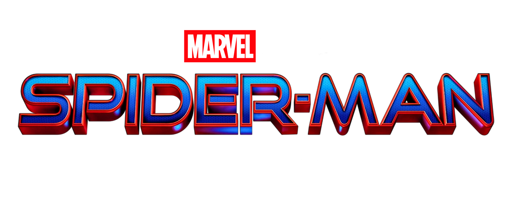
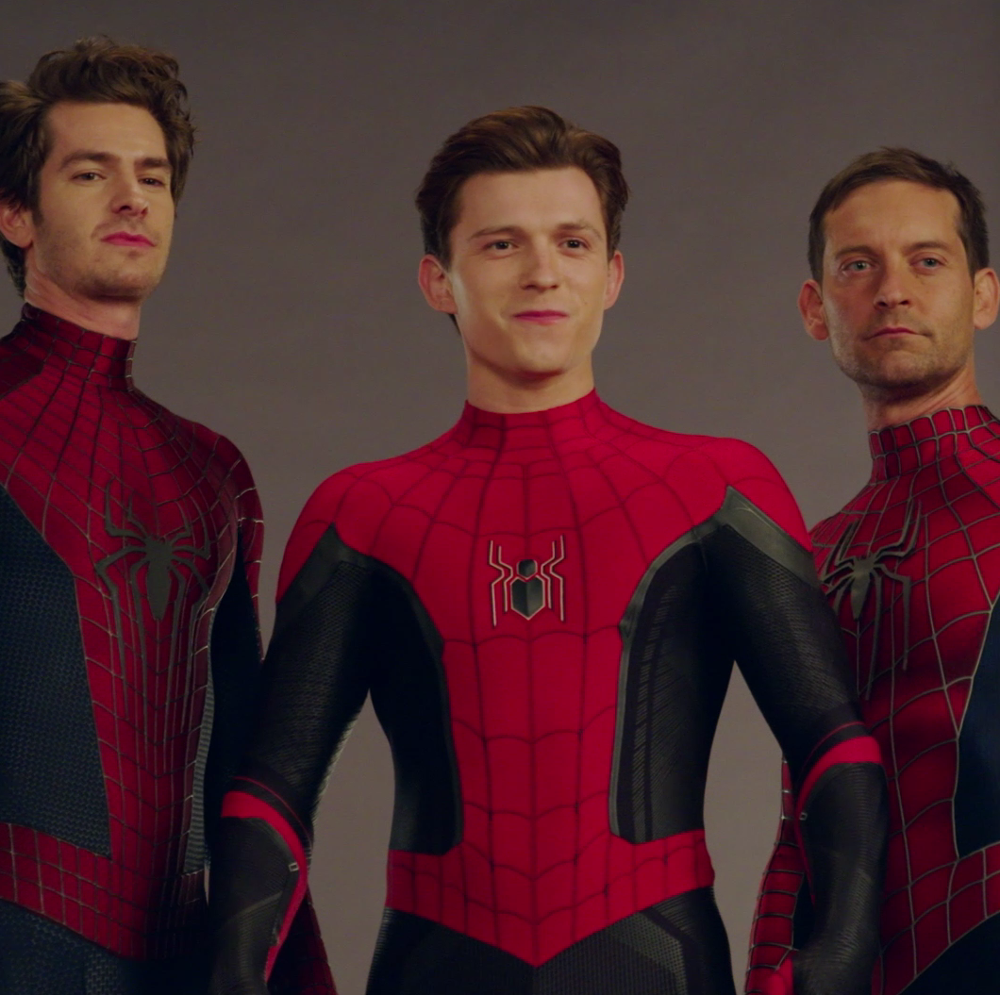

Pela primeira vez na história cinematográfica do Homem-Aranha, nosso herói amigão da vizinhança é desmascarado e não consegue mais separar sua vida normal dos grandes riscos de ser um super-herói.
Quando ele pede ajuda ao Doutor Estranho, os riscos tornam-se ainda mais perigosos, forçando-o a descobrir o que realmente significa ser o Homem-Aranha.

Peter Parker / Homem-Aranha
MJ
Doutor Estranho
Ned Leeds
O filme reúne gerações de fãs ao trazer de volta vilões icônicos e variantes do herói, criando uma experiência cinematográfica inesquecível que celebra o legado do personagem.